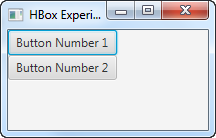

El componente JavaFX VBox es un componente de diseño que coloca todos sus nodos secundarios (componentes) en una columna vertical, uno encima del otro. El componente JavaFX VBox está representado por la clase javafx.scene.layout.VBox.
Crear un VBox
Para usar el componente JavaFX VBox, primero se debe crear una instancia de la clase VBox. Creas una instancia de VBox usando su constructor de esta manera:
VBox también tiene un constructor que toma una lista de componentes de longitud variable que deben estar creados con anterioridad.
Por ejemplo:
Button button1 = new Button("Botón Número 1");
Button button2 = botón nuevo("Número de botón 2");
VBox vbox = nuevo VBox (button1, button2);
Este ejemplo de VBox distribuirá las dos instancias de Button una encima de la otra en una columna vertical.
Añadir un VBox a la escena
Para que una instancia de VBox sea visible, debe agregarse al gráfico de escena. Esto significa añadirlo a un objeto de escena o como elemento secundario de otro componente de diseño que se adjunta a un objeto de escena.
Por ejemplo, aquí se añade un JavaFX VBox con las dos instancias de Button al gráfico de escena:
import javafx.application.Application;
import javafx.scene.Scene;
import javafx.scene.control.Button;
import javafx.scene.layout.VBox;
import javafx.stage.Stage;
public class VBoxExperiments extends Application{
@Override
public void start(Stage primaryStage) throws Exception {
primaryStage.setTitle("VBox Experiment 1");
Button button1 = new Button("Button Number 1");
Button button2 = new Button("Button Number 2");
VBox vbox = new VBox(button1, button2);
Scene scene = new Scene(vbox, 200, 100);
primaryStage.setScene(scene);
primaryStage.show();
}
public static void main(String[] args) {
Application.launch(args);
}
}
El resultado de ejecutar el ejemplo anterior de JavaFX VBox es una aplicación que se ve así:

Espaciado de nodos secundarios
En el ejemplo anterior, el VBox colocó los nodos (controles de botón) justo debajo del otro. Podemos hacer que VBox inserte algo de espacio entre sus controles anidados proporcionando el espacio en el constructor de VBox. Por ejemplo:
VBox vbox = new VBox(20, boton1, boton2);
Este ejemplo establece el espacio entre los controles en el componente de diseño VBox en 20.
También podemos establecer el espacio entre los controles anidados usando el método setSpacing(), así:
Este ejemplo establecerá el espacio entre los controles anidados en 50.
Alineación de nodos secundarios
Dado que JavaFX VBox es un componente contenedor, lo que significa que contiene otros componentes JavaFX, puede especificar cómo VBox debe alinear los componentes que contiene. Lo hace a través del método setAlignment() de VBox. Por ejemplo:
vbox.setAlignment(Pos.BASELINE_CENTER);
Este ejemplo hará que VBox coloque sus nodos secundarios a lo largo de la línea base (verticalmente) de la línea vertical, y desde el centro de la línea hacia afuera (horizontalmente).
El control JavaFX VBox admite las siguientes opciones de alineación:
| Parámetro |
Verticalmente |
Horizontalmente |
| Pos.BASELINE_LEFT |
Baseline |
Left |
| Pos.BASELINE_CENTER |
Baseline |
Center |
| Pos.BASELINE_RIGHT |
Baseline |
Right |
| Pos.BOTTOM_LEFT |
Bottom |
Left |
| Pos.BOTTOM_CENTER |
Bottom |
Center |
| Pos.BOTTOM_RIGHT |
Bottom |
Right |
| Pos.CENTER_LEFT |
Center |
Left |
| Pos.CENTER |
Center |
Center |
| Pos.CENTER_RIGHT |
Center |
Right |
| Pos.TOP_LEFT |
Top |
Left |
| Pos.TOP_CENTER |
Top |
Center |
| Pos.TOP_RIGHT |
Top |
Right |
Centrar horizontalmente
Podemos utilizar las funciones de alineación de nodos secundarios para centrar horizontalmente los nodos secundarios de un VBox. Por ejemplo:
vbox.setAlignment(Pos.BASELINE_CENTER);
Margen de nodo secundario
Podemos establecer el margen para los nodos secundarios de un JavaFX VBox usando el método estático setMargin(). Por ejemplo:
Button boton = nuevo Button ("Botón 1");
VBox vbox = nuevo VBox (boton);
VBox.setMargin(boton, new Insets(10, 10, 10, 10));
Este ejemplo establece el margen alrededor del Botón dentro del VBox a 10 en cada lado.
Nodo secundario vgrow
Podemos especificar si un nodo secundario de un VBox debe crecer verticalmente para llenar cualquier espacio disponible dentro del VBox. Lo hace a través del método estático VBox setVgrow(). Debe especificar para qué nodo secundario se establece la regla. Lo hace pasando el nodo secundario como parámetro a setVgrow(). También debe pasar la política de expansión vertical como parámetro a setVgrow(). Aquí hay un ejemplo de cómo decirle a un botón secundario que se expanda verticalmente si hay espacio disponible dentro del VBox:
Button button = new Button("Button 1");
VBox vbox = new VBox(button);
VBox.setVgrow(button, Priority.ALWAYS);
La clase Priority contiene las siguientes constantes que puede usar para establecer la política de expansión:
- Policy.ALWAYS
- Policy.SOMETIMES
- Policy.NEVER
Tenga en cuenta que VBox solo tendrá espacio vertical adicional disponible si los nodos secundarios no tienen la misma altura preferida, o si establece explícitamente una altura preferida en VBox que sea mayor que la altura preferida de sus nodos secundarios.
fillWidth
La propiedad JavaFX VBox fillWidth se puede usar para decirle al control VBox si debe expandir el ancho de sus hijos para llenar todo el ancho de VBox, o mantener a sus hijos en sus anchos preferidos.
La propiedad fillWidth solo afecta a los componentes secundarios cuyos anchos realmente pueden cambiar. Por ejemplo, un Botón no cambia su ancho por defecto. Su ancho máximo se establece en su ancho preferido. Sin embargo, puede anular eso configurando el ancho máximo del Botón, o cualquier otro componente que desee anidar dentro del VBox, en un valor diferente a su valor preferido.
Aquí hay un ejemplo que muestra cómo funciona la propiedad fillWidth:
Button button = new Button("Button 1");
button.setMaxWidth(99999D); //or Double.MAX_VALUE;
VBox vbox = new VBox(button);
vbox.setFillWidth(true);